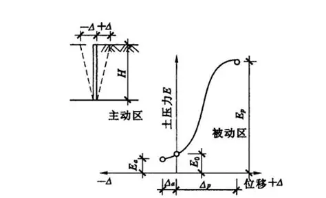
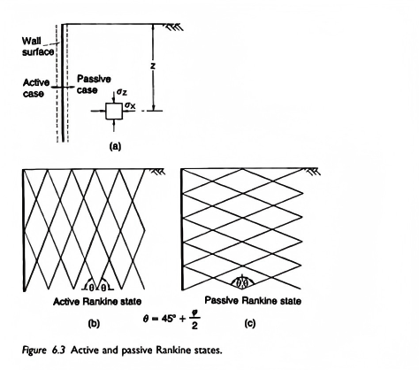
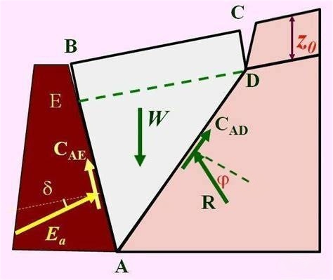
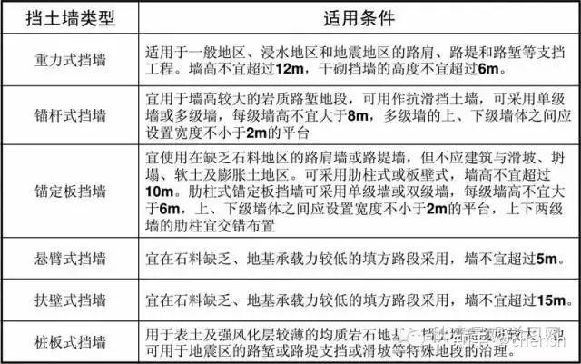
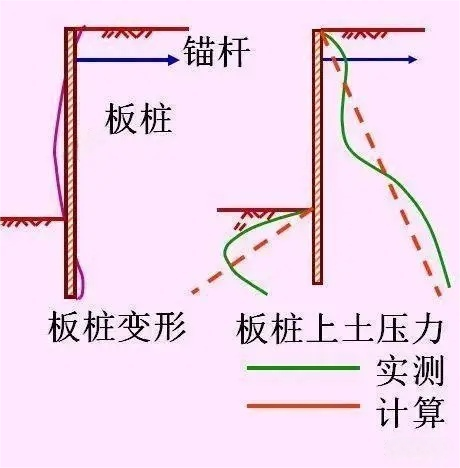

6.1 概述
土压力是指挡土墙、基坑支护等结构物挡土时，墙后土体因自重、超载或地下水等因素对结构物产生的侧压力。
6.1.1 土压力的分类
- 静止土压力（E₀）：挡墙不发生任何移动或转动时，墙后土体处于弹性平衡状态，此时作用在墙上的土压力
- 主动土压力（Eₐ）：挡墙在土压力作用下向前移动或转动，墙后土体达到主动极限平衡状态时，作用在墙上的土压力
- 被动土压力（Eₚ）：挡墙在外力作用下向后移动或转动，墙后土体达到被动极限平衡状态时，作用在墙上的土压力

图6.1 土压力的三种类型示意图
6.1.2 土压力的影响因素
- 土的物理力学性质（重度、内摩擦角、黏聚力等）
- 墙背形状和粗糙度
- 墙背位移的方向和大小
- 填土面的坡度和超载情况
- 地下水的影响
- 时间效应（黏性土的蠕变）
6.1.3 土压力理论的发展
土压力理论主要有两大理论体系：
- 朗肯土压力理论：由英国学者朗肯（Rankine）于1857年提出
- 库仑土压力理论：由法国学者库仑（Coulomb）于1776年提出
6.2 静止土压力计算
6.2.1 静止土压力系数
静止土压力系数（K₀）是指静止土压力与竖向有效应力的比值：
K₀ = σₕ/σᵥ
其中：
- σₕ：水平向静止土压力（kPa）
- σᵥ：竖向有效应力（kPa）
6.2.2 静止土压力系数的确定方法
- 经验公式法：K₀ = 1 - sinφ'（适用于正常固结土）
- 超固结土修正：K₀ = (1 - sinφ')OCR^sinφ'，其中OCR为超固结比
- 现场测试法：如旁压试验、自钻式旁压试验等
6.2.3 静止土压力的分布与合力计算
对于垂直墙背、水平填土面的情况：
p₀(z) = K₀γz
E₀ = (1/2)K₀γH²
E₀ = (1/2)K₀γH²
合力作用点距墙底的距离为H/3。
其中：
- p₀(z)：深度z处的静止土压力强度（kPa）
- E₀：总静止土压力（kN/m）
- γ：土的重度（kN/m³）
- H：挡墙高度（m）
注意
静止土压力通常发生在刚性较大的结构物中，如地下室侧墙、桥梁桥台等。
6.3 朗肯土压力理论
6.3.1 朗肯土压力理论的基本假设
- 挡墙墙背垂直且光滑
- 填土面水平
- 墙后填土处于极限平衡状态
- 忽略墙背与填土之间的摩擦力
6.3.2 主动土压力计算
主动土压力系数：
Kₐ = tan²(45° - φ/2)
无黏性土的主动土压力强度：
pₐ(z) = γzKₐ
黏性土的主动土压力强度：
pₐ(z) = γzKₐ - 2c√Kₐ
临界深度：
z₀ = 2c/(γ√Kₐ)
总主动土压力：
Eₐ = (1/2)γH²Kₐ - 2cH√Kₐ + (2c²)/(γ)

图6.2 朗肯土压力理论示意图
6.3.3 被动土压力计算
被动土压力系数：
Kₚ = tan²(45° + φ/2)
无黏性土的被动土压力强度：
pₚ(z) = γzKₚ
黏性土的被动土压力强度：
pₚ(z) = γzKₚ + 2c√Kₚ
总被动土压力：
Eₚ = (1/2)γH²Kₚ + 2cH√Kₚ
重要关系
朗肯理论中，主动土压力系数和被动土压力系数满足：Kₚ = 1/Kₐ
6.4 库仑土压力理论
6.4.1 库仑土压力理论的基本假设
- 墙后填土为无黏性土（c=0）
- 当墙发生位移时，墙后土体形成一个滑动楔体
- 滑动面为一平面
- 滑动楔体处于极限平衡状态
6.4.2 库仑主动土压力计算
主动土压力系数：
Kₐ = [cos²(φ-δ)] / [cos²δ cos(δ+ε) [1+√(sin(φ+δ)sin(φ-β)/cos(δ+ε)cos(ε-β))]^2]
总主动土压力：
Eₐ = (1/2)γH²Kₐ
其中：
- δ：墙背与填土之间的摩擦角（°）
- ε：墙背倾角（°），俯斜为正
- β：填土面倾角（°）

图6.3 库仑土压力理论示意图
6.4.3 库仑被动土压力计算
被动土压力系数：
Kₚ = [cos²(φ+δ)] / [cos²δ cos(δ-ε) [1-√(sin(φ+δ)sin(φ+β)/cos(δ-ε)cos(ε+β))]^2]
总被动土压力：
Eₚ = (1/2)γH²Kₚ
6.4.4 朗肯理论与库仑理论的比较
| 比较项目 | 朗肯土压力理论 | 库仑土压力理论 |
|---|---|---|
| 基本假设 | 墙背垂直、光滑，填土面水平 | 墙背可倾斜，填土面可倾斜，考虑墙背摩擦力 |

图6.4 挡土墙设计示意图
6.5 特殊情况下的土压力计算
6.5.1 填土面有均布荷载
当填土面有均布荷载q时，可以将其转换为等效的土柱高度：
h = q/γ
然后将墙高视为H+h进行计算。
6.5.2 成层填土
对于成层填土，应分层计算土压力，然后叠加。每层土的压力分布为：
第一层：pₐ₁(z) = γ₁zKₐ₁ - 2c₁√Kₐ₁
第二层：pₐ₂(z) = (γ₁H₁ + γ₂(z-H₁))Kₐ₂ - 2c₂√Kₐ₂
第二层：pₐ₂(z) = (γ₁H₁ + γ₂(z-H₁))Kₐ₂ - 2c₂√Kₐ₂
6.5.3 填土中有地下水
当填土中有地下水时，应考虑水土分算或水土合算：
- 水土分算：分别计算土压力和水压力，然后叠加
- 水土合算：采用饱和重度和有效应力指标进行计算
6.5.4 地震作用下的土压力
地震作用下的土压力可采用拟静力法计算，引入地震系数Kₕ：
Kₐₑ = [1 ± Kₕ tanφ] / [1 ∓ Kₕ/tanφ] * Kₐ
其中，上标符号用于主动土压力，下标符号用于被动土压力。

图6.5 地震作用下的土压力示意图
本章小结
- 土压力分为静止土压力、主动土压力和被动土压力三种类型
- 朗肯土压力理论基于半无限弹性体的极限平衡状态，假设墙背垂直光滑
- 库仑土压力理论基于滑动楔体的极限平衡，考虑了墙背倾角、填土面坡度和墙背摩擦
- 特殊情况下的土压力计算需要考虑填土面荷载、成层填土、地下水和地震作用等因素
- 实际工程中应根据具体情况选择合适的土压力计算方法